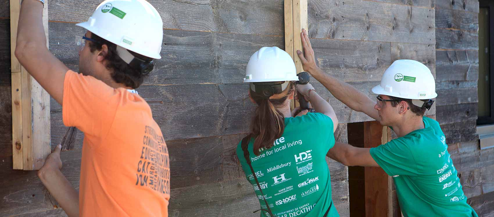
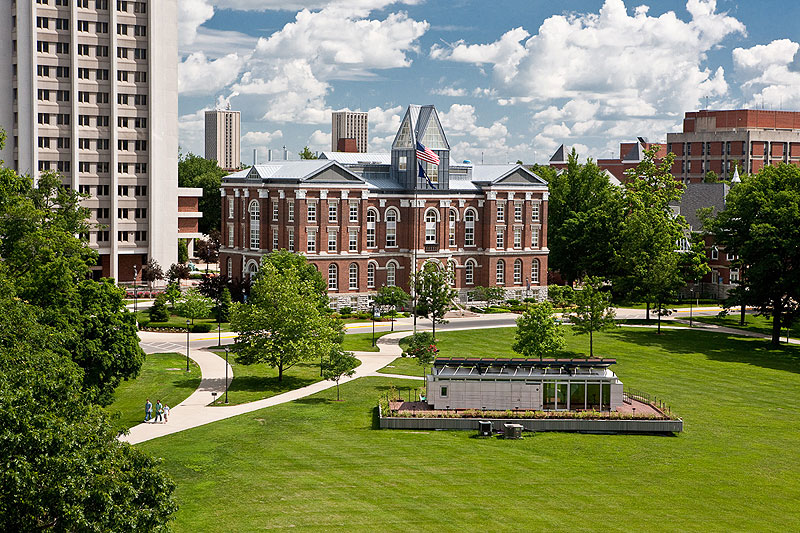
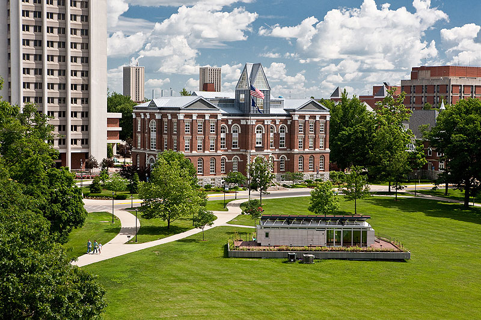

BANNER IMAGE: PULL FROM /apply.html /about-faqs.html BANNER IMAGE:

/about.html BANNER IMAGE: 
The U.S. Department of Energy Solar Decathlon is an award-winning program that challenges collegiate teams to design, build, and operate solar-powered houses that are cost-effective, energy-efficient, and attractive. The winner of the competition is the team that best blends affordability, consumer appeal, and design excellence with optimal energy production and maximum efficiency.
The first Solar Decathlon was held in 2002; the competition has since occurred biennially in 2005, 2007, 2009, 2011, and 2013.
The next U.S. Department of Energy Solar Decathlon will take place Oct. 8–18, 2015, at the Orange County Great Park in Irvine, California. Plan your visit.
One of the U.S. Department of Energy's most successful outreach efforts, the Solar Decathlon helps accelerate the adoption of energy-efficient products and design by:
Since 2002, the U.S. Department of Energy Solar Decathlon has:
/about-apply.html
BANNER IMAGE:
PULL FROM /apply.html
/about-faqs.html
BANNER IMAGE:
These frequently asked questions provide an overview of the U.S. Department of Energy Solar Decathlon. If you have a question that is not answered here or elsewhere on the site, please contact us.
The U.S. Department of Energy Solar Decathlon challenges collegiate teams to design, build, and operate solar-powered houses that are affordable, energy-efficient, and attractive. The winner of the competition is the team that best blends cost-effectiveness, consumer appeal, and design excellence with optimal energy production and maximum efficiency.
The first Solar Decathlon was held in 2002; the competition has since occurred biennially in 2005, 2007, 2009, 2011, and 2013. The next Solar Decathlon will take place in October 2015 at the Orange County Great Park in Irvine, California. Plan your visit.
Teams from colleges and universities across the globe participate in the Solar Decathlon. Today's students are tomorrow's engineers, architects, scientists, entrepreneurs, and homeowners. The Solar Decathlon encourages students to incorporate energy efficiency and clean energy into their future professional projects and personal lives.
Like Olympic athletes, the solar decathletes draw on all their strengths, including design and architecture, engineering and performance, and education and promotion. The teams rely on expertise from many disciplines as they spend months fundraising, planning, designing, analyzing, and finally building and improving their houses. Future engineers work with future architects to create affordable, energy-efficient houses.
Teams composed of faculty and students from post-secondary institutions submit proposals and plans for consideration. Applications are evaluated by a panel of engineers, scientists, and building experts. Teams are required to meet specific criteria to demonstrate their ability to design and build an innovative, entirely solar-powered house; raise funds; support the project through well-integrated curricula; and assemble a team to carry the project through to completion. In addition, a panel of professionals evaluates conceptual designs from proposers. The results of their evaluations, combined with scores based on the four criteria listed above, determine the Solar Decathlon teams.
If you are interested in competing in a future Solar Decathlon, learn how to apply.
Selected teams can be proud that they are among a select group of schools and students to take part in the unique educational and workforce development opportunity that is the Solar Decathlon. However, per federal requirements, the number of applications received is confidential.
The student teams spend almost two years designing and building their houses and preparing for the competition. Students test their houses to ensure optimal energy production and maximum efficiency.
The competition places demands on the buildings' energy systems to maintain the house within a certain temperature range, to provide lighting, to run appliances, and much more. The houses generate energy with photovoltaic (also called solar electric) systems that produce electricity and with solar thermal systems for space heating and cooling and water heating.
The Solar Decathlon 2015 contests are:
Complete "as-built" drawings and submittals from past Solar Decathlon teams can be downloaded from:
The construction costs of the team houses vary based on the technologies employed and the target market for which they were designed. In 2011, the Solar Decathlon introduced a new contest—Affordability—that rewards full points for teams that build houses with costs estimated at or less than $250,000. In this way, the Solar Decathlon showcases affordable houses that combine energy-efficient construction and appliances with renewable energy systems available today.
Some of the houses are sold to recover costs or raise money for future teams. Most of the houses, however, are used for research and are on display for public tours at their respective universities. Learn more about each of the houses from the following Solar Decathlon competitions:
/about-contacts.html
BANNER IMAGE: 

The U.S. Department of Energy Solar Decathlon is a powerful education tool not only for the decathletes who participate directly but also for <JUMP LINK TO BELOW HEADER> homeowners, <JUMP LINK TO BELOW HEADER> building professionals, <JUMP LINK TO BELOW HEADER> teachers, and <JUMP LINK TO BELOW HEADER> students. Visiting the Solar Decathlon and touring the team houses is a great way to see home energy efficiency and renewable energy products and designs in action and learn about their uses and benefits. Until the next event, see these educational resources to learn more about renewable energy and energy efficiency at home.
The U.S. Department of Energy's Office of Energy Efficiency and Renewable Energy's Energy Saver website is a vast resource where you can explore options for saving energy and using renewable energy at home, at work, in your community, and while driving.
Find products and materials used in past Solar Decathlon competition houses in the Solar Decathlon 2013 product directory and Solar Decathlon 2009 product directory.
The Department of Energy Office of Energy Efficiency and Renewable Energy's Building Technologies Office funds research and technology development to reduce commercial and residential building energy use. Its website offers a variety of programs, tools, and resources for building professionals.
Explore the construction drawings and project manuals of Solar Decathlon competition houses from 2013, 2011, 2009, 2007, and 2005.
Focused on solar energy, the Solar Decathlon curriculum is intended for middle school and high school students.
The Department of Energy offers information about student competitions, internships, training and degree programs, career planning tools, and professional development opportunities. You can also explore videos, data tools, lessons, activities, and other resources for educators at all levels.
Find educational content, internships and student partnership programs, and national events offered by the Department of Energy.
The Department of Energy offers programs, internships, scholarships, and research opportunities focused on developing the next generation of STEM (science, technology, engineering, and mathematics) professionals.
/education-curriculum.html
BANNER IMAGE: 
The history of the U.S. Department of Energy Solar Decathlon dates to the inaugural event in 2002. Since then, the Solar Decathlon has been held biennially in 2005, 2007, 2009, 2011, and 2013. Learn about past competitions, find out how past competition houses are being used today, or plan a visit to a Solar Decathlon house near you.
 Solar Decathlon 2013
Solar Decathlon 2013
 Solar Decathlon 2011
Solar Decathlon 2011
 Solar Decathlon 2009
Solar Decathlon 2009
 Solar Decathlon 2007
Solar Decathlon 2007
 Solar Decathlon 2005
Solar Decathlon 2005
 <WE HAVE ONLY A FEW IMAGES FROM THIS COMPETITION. LET ME KNOW IF THIS DOESN'T WORK, AND I'LL TRACK DOWN OLD HARD DISCS.>
Solar Decathlon 2002

Where Are the Solar Decathlon Houses Now?
<WE HAVE ONLY A FEW IMAGES FROM THIS COMPETITION. LET ME KNOW IF THIS DOESN'T WORK, AND I'LL TRACK DOWN OLD HARD DISCS.>
Solar Decathlon 2002

Where Are the Solar Decathlon Houses Now?
 Solar Decathlon House Tours
Solar Decathlon House Tours
/international.html
BANNER IMAGE: 
Since the first competition in 2002, the Solar Decathlon has expanded internationally to include four additional worldwide competitions: Solar Decathlon China, Solar Decathlon Europe, Solar Decathlon Latin America and Caribbean, and Solar Decathlon Middle East.
 Solar Decathlon China
Solar Decathlon China
Conceived in 2011, the first Solar Decathlon China took place in 2013. A second competition is currently in development.
Right float:
The 2nd International Solar Decathlon China was formed through a memorandum of understanding among the U.S. Department of Energy, the National Energy Administration of the People's Republic of China, and the China Overseas Development Association. Currently in the planning phase, the 2nd International Solar Decathlon China is expected to take place in 2016 or 2017, with a call for collegiate applicants in 2015.
The first Solar Decathlon China was held in Datong, China, August 2–13, 2013.
The top finishers were:
The other participating teams were:
Solar Decathlon China 2013 was hosted by the National Energy Administration and the U.S. Department of Energy, organized by Peking University, and supported by private companies. For more information, see the Solar Decathlon China 2013 website.
On Oct. 18, 2007, the Spanish and U.S. governments signed a memorandum of understanding to create Solar Decathlon Europe, a complementary competition to the U.S. Department of Energy Solar Decathlon. Spain hosted the first two of these competitions in 2010 and 2012. In 2014, Solar Decathlon Europe moved north to Versailles, France.
Float right:Solar Decathlon Europe 2014 took place in Versailles, France, June 28–July 14, 2014.
The final standings of the 20 Solar Decathlon Europe 2014 competitors were:
| Rank | Team | Point Total |
| 1 | Universitá Degli Studi di Roma TRE (Italy) | 840.63 |
| 2 | ENSA Nantes, ESB, Audencia Group, Audencia Nantes, Ecole des Mines Nantes, ISSBA, IUT Nantes, Architectes Ingénieurs Associés, Atlansun, Institut des Matériaux Jean Rouxel, Medieco, Novabuild, SAMOA, and SCE (France) | 839.75 |
| 3 | Delft University of Technology (Netherlands) | 837.87 |
| 4 | University of the Arts Berlin and Technical University of Berlin (Germany) | 823.42 |
| 5 | Lucerne University of Applied Sciences and Arts – School of Engineering and Architecture (Switzerland) | 804.75 |
| 6 | Universidad Tecnica Federico Santa Maria – Valparaiso (Chile) and Université de la Rochelle – Espace Bois de l'IUT (France) | 802.42 |
| 7 | University of Applied Sciences Frankfurt am Main (Germany) | 793.71 |
| 8 | Technical University of Denmark (Denmark) | 780.01 |
| 9 | Université d'Angers (France) and Appalachian State University (U.S.A.) | 776.92 |
| 10 | Universitat Politècnica de Catalunya – Barcelona (Spain) | 776.24 |
| 11 | Chiba University (Japan) | 774.09 |
| 12 | National Chiao Tung University (Taiwan) | 772.15 |
| 13 | Universidad Nacional Autonoma de México and the Center of Research in Industrial Design and the School of Engineering and the School of Arts (Mexico) | 760.17 |
| 14 | Rhode Island School of Design (U.S.A.), Brown University (U.S.A.), and University of Applied Sciences – Erfurt (Germany) | 657.46 |
| 15 | Universisad de Castilla - La Mancha and Universidad de Alcala de Henares University (Spain) | 650.44 |
| 16 | Costa Rica Institute of Technology - Cartago (Costa Rica) | 588.8 |
| 17 | King Mongkut's University of Technology Thonburi (Thailand) | 508.15 |
| 18 | Academy of Architecture and IIT Bombay (India) | 452.3 |
| 19 | Technical University of Civil Engineering Bucharest, University Politehnica of Bucharest, and University of Architecture and Urbanism "Ion Mincu" (Romania) | 348.49 |
| 20 | Université Paris-Est, ENSA Paris Malaquais, ENSA Marne la Vallée, ESTP Paris, Ecole des Ponts Paris Tech, ESIEE Paris, ENSG, and IFSTTAR (France) | 268.81 |
Solar Decathlon Europe 2012 was held Sept. 14–30, 2012, in Madrid, Spain. The final standings of its 18 competitors were:
| Rank | Team | Point Total |
| 1 | École Nationale Supérieure d'Architecture de Grenoble (France) | 908.72 |
| 2 | Universidades de Sevilla, Jaén, Granada, and Málaga (Spain) | 897.39 |
| 3 | Universitá Degli Studi di Roma Tre, Sapienza Unviersitá di Roma, Free University of Bozen, and Fraunhofer Italy (Italy) | 863.49 |
| 4 | University of Applied Sciences Konstanz (Germany) | 835 |
| 5 | RWTH Aachen University (Germany) | 819.31 |
| 6 | Budapest University of Technology and Economics (Hungary) | 766.98 |
| 7 | Universidad CEU Cardenal Herrera (Spain) | 765.98 |
| 8 | Universitat Politécnica de Catalunya (Spain) | 731.57 |
| 9 | "Ion Mincu" University of Architecture and Urbanism, Technical University of Civil Engineering of Bucharest, and Politehnica University of Bucharest (Romania) | 719.16 |
| 10 | Technical University of Denmark (Denmark) | 715.59 |
| 11 | The American University in Cairo (Egypt) | 686.88 |
| 12 | Universidad del País Vasco – Euskal Herriko Unibertsitatea (Spain) | 684.20 |
| 13 | Bordeaux University (France) | 674.80 |
| 14 | Universidade Federal de Santa Catarina and Universidade de São Paulo (Brazil) | 670.99 |
| 15 | Chiba University (Japan) | 641.91 |
| 16 | Universidade do Porto (Portugal) | 538.29 |
| 17 | Ecole Nationale Supérieure d'Architecture Paris – Malaquais, Universitá di Ferrara, Ecole des Ponts Paristech, and Politecnico di Bari (France-Italy) | 416.49 |
| 18 | Universidad de Zaragoza (Spain) | 371.48 |
The first Solar Decathlon Europe took place in the Villa Solar near the Royal Palace (Palacia Real) of historic Madrid, Spain, in June 2010. Seventeen teams from nine countries competed in Solar Decathlon Europe 2010. The final standings were:
| Rank | Team | Point Total |
| 1 | Virginia Polytechnic Institute & State University | 812 |
| 2 | University of Applied Sciences Rosenheim | 811 |
| 3 | Stuttgart University of Applied Sciences | 808 |
| 4 | Ecole National Supérieure d'architecture de Grenoble | 794 |
| 5 | Helsinki University of Technology | 777 |
| 6 | Bergische Universität Wuppertal | 773 |
| 7 | Arts et Métiers Paris Tech | 763 |
| 8 | University of Florida | 743 |
| 9 | Universidad CEU Cardenal Herrera | 737 |
| 10 | Fachhochschule fur Technik und Wirtschaft Berlin | 729 |
| 11 | Tongji | 683 |
| 12 | Universidad de Sevilla | 678 |
| 13 | Universidad Politécnica de Cataluña | 668 |
| 14 | Universidad de Valladolid | 648 |
| 15 | University of Nottingham | 641 |
| 16 | Tianjin University | 585 |
| 17 | Instituto de Arquitectura Avanzada de Cataluña | 583 |
/international-latin-america.html
The first Solar Decathlon Latin America and Caribbean will be held in December 2015 on the campus of Universidad del Valle in Santiago de Cali, Colombia. The competition will focus on social housing projects tailored for the conditions of the tropics. For more information, see the Solar Decathlon Latin America and Caribbean website.
On March 10, 2014, representatives of the U.S. Department of Energy and the government of Colombia signed a memorandum of understanding to collaborate on the development of Solar Decathlon Latin America and Caribbean. Under the agreement, the countries will exchange information regarding rules, scoring, judging, safety, and site and team selection.
In addition to educating students, the competition is intended to encourage private sector participation in the energy sector and to promote sustainable development and land use planning.
Float right/international-middle-east.html
Solar Decathlon Middle East—to be held in Dubai, United Arab Emirates—is the newest member of the global Solar Decathlon family.
On June 17, 2015, the Dubai Supreme Council of Energy, the Dubai Electricity and Water Authority, and the U.S. Department of Energy signed a memorandum of understanding (MOU) to collaborate on the development of Solar Decathlon Middle East, a competition that will integrate unique local and regional characteristics while following the philosophy, principles, and model of the U.S. Department of Energy Solar Decathlon.
Two Solar Decathlon Middle East competitions are planned: the first in 2018 and the second in 2020. A call for applicants for the 2018 competition will be issued in 2015.
/2015/visit.html
BANNER IMAGE: 
The U.S. Department of Energy Solar Decathlon takes place Oct. 8–18, 2015, at the Orange County Great Park in Irvine, California. Open to the public free of charge, the Solar Decathlon gives visitors the opportunity to tour solar-powered houses, gather ideas to use in their own homes, and learn how energy-saving features can help them save money. Plan your visit today.
 Dates & Hours
Dates & Hours
 Things To Do
Things To Do
 Directions & Transportation
Directions & Transportation
/2015/visit-dates-hours.html
BANNER IMAGE: 
The U.S. Department of Energy Solar Decathlon takes place Oct. 8–18, 2015, at the Orange County Great Park in Irvine, California. The Solar Decathlon competition houses will be open to visitors from 11 a.m. to 7 p.m. daily on eight days over two weekends:
The remaining dates, the Solar Decathlon village will be closed for competition activities.
/2015/visit-to-do.html
BANNER IMAGE:
Experience the excitement of the U.S. Department of Energy Solar Decathlon! Explore these things to do on your visit:
Tours
Solar Decathlon Events
City of Irvine Children's Activities Area
Orange County Great Park attractions.
Take a tour of a U.S. Department of Energy Solar Decathlon competition house or of the Solar Decathlon village. Tours are offered only during our public exhibit hours, from 11 a.m. to 7 p.m. daily:
Two tour options are available:
Docents are available on a first-come, first-served basis to provide 30–60 minute walking tours of the Solar Decathlon village. These tours depart every 15 minutes from the Welcome Tent in the Solar Decathlon village.
See inside the Solar Decathlon houses and meet the team members who built them on a house tour. Each Solar Decathlon team provides tours of its competition house during public exhibit hours.
Celebrate the Solar Decathlon with these competition events:
Join us as we kick off the U.S. Department of Energy Solar Decathlon 2015! The Opening Ceremony takes place 9:30–11 a.m. on Oct. 8 in Hangar 244.
The first-, second-, and third-place winners of these contests will be announced at 10 a.m. in Hangar 244:
Join the celebration as we announce the overall winners of Solar Decathlon 2015! The final awards ceremony will take place Oct. 17 at 10 a.m. in Hangar 244.
The City of Irvine will host a Children's Activities Area from 11 a.m. to 5 p.m. Oct. 10–11 and Oct. 17–18 in the Orange County Great Park's Palm Court and Farm + Food Lab. Families are invited for free interactive games, crafts, an inflatable obstacle course, face painting, and balloon artists.
While visiting Solar Decathlon 2015, don't miss these attractions within the Orange County Great Park:
Starting Oct. 9, "Bold and Independent: UC Irvine's 50th Anniversary Exhibition" celebrates the university's 50th anniversary.
Hours: 10 a.m.–4 p.m. Saturdays and Sundays, 12—4 p.m. Thursdays and Fridays
Holding up to 30 passengers and soaring 400 feet above the surrounding landscape, the Great Park Balloon offers an unmatched 360° view that spans 40 miles on a clear day.
Hours: 9 a.m.—3 p.m. and 7—10 p.m. Saturdays and Sundays, 10 a.m.—3 p.m. and 7—10 p.m. Thursdays and Fridays (weather permitting)
More information >
Featuring hand-painted artwork inspired by vintage orange crate labels and Orange County scenes, the Great Park Carousel is a favorite for kids of all ages. Carrying up to 36 passengers, the carousel is wheelchair-accessible.
Hours: 9 a.m.—10 p.m. Saturdays and Sundays, 10 a.m.—10 p.m. Thursdays and Fridays.
More information >
The Visitors Center Pavilion offers restroom facilities as well as a lending library of footballs, soccer balls, Bocce ball sets, Frisbees, and jump ropes.
Hours: 9 a.m.—10 p.m. Saturdays and Sundays, 10 a.m.—10 p.m. Thursdays and Fridays
The Farm + Food Lab is a hands-on gardening experience, featuring themed planters with fruits, flowers, vegetables and herbs. Themed gardens include the Pizza and Spaghetti Garden, an Ethnic Garden, the Fruit Salad Garden, and a Sensory Garden.
Hours: Daily 10 a.m.—3 p.m.
• Farmers Market
Shop for fresh and seasonal fruits and vegetables, breads, flowers and plants, and other items from local artisans.
Hours: 10 a.m.—2 p.m. Sundays
• Walkable Historical Timeline
The timeline spans 2,604 ft and includes 162 historical milestones, beginning at 13,000 BC when humans reach the Americas and concluding with the 1989 fall of the Berlin Wall.
Hours: 9 a.m.—10 p.m. Saturdays and Sundays, 10 a.m.—10 p.m. Thursdays and Fridays
• Kids Rock Playground
Kids Rock is focused on educating young guests about conservation ecology and the water cycle (condensation, precipitation, accumulation, evaporation).
Hours: 9 a.m.—10 p.m. Saturdays and Sundays, 10 a.m.—10 p.m. Thursdays and Fridays
/2015/visit-directions-transportation.html
BANNER IMAGE:
Visit the U.S. Department of Energy Solar Decathlon 2015 at the Orange Country Great Park in Irvine, California!
The Great Park is situated in the geographic center of Orange County within the city limits of Irvine—approximately halfway between Los Angeles and San Diego, about 15 minutes from John Wayne Airport, and accessible via the Interstate 5 and 405 freeways and the 133 and 241 toll roads.
The City of Irvine iShuttle will provide shuttle service between Metrolink's Irvine Station and the Solar Decathlon village. This service is free for all Metrolink riders who show their train ticket to the driver. The shuttle picks up and drops off on the Great Park side of the tracks. Learn how to ride.
Bicycle parking will be available within the Solar Decathlon village. Plan your route on the City of Irvine Bikeways website.
A $10 parking fee will be charged per vehicle by the Orange County Great Park. Shuttles will transport guests between the parking area and the Solar Decathlon village from 10 a.m. to 7:20 p.m. on public exhibit days. On Oct. 8 and 17, shuttles will begin operation at 9 a.m. to accommodate Opening Ceremony and Final Awards Ceremony attendees.
To visit the Great Park by car:
For the U.S. Department of Energy Solar Decathlon, collegiate teams spend almost two years designing and building energy-efficient houses powered by the sun. In the final competition, the teams and their houses go head to head in 10 contests to determine an overall winner.
The winning team produces a house that:
Learn more about Solar Decathlon 2015:


/2015/competition-teams.html
BANNER IMAGE:
The university-led teams that design, build, and operate the competition's solar-powered houses are the heart of the U.S. Department of Energy Solar Decathlon.
These teams will compete in Solar Decathlon 2015:
See a complete list of Solar Decathlon 2015 team contacts.
/2015/competition-teams-contacts.html
BANNER IMAGE:  Pull content from /teams_contacts.html
/2015/competition-team-cal-poly.html
Pull content from /teams_contacts.html
/2015/competition-team-cal-poly.html
BANNER IMAGE: 
Team website: www.calpolysolardecathlon.org
California Polytechnic State University, San Luis Obispo, returns to the U.S. Department of Energy Solar Decathlon in 2015 with a house designed for coastal California. As such, INhouse addresses the majority of its heating, cooling, and lighting needs architecturally.
Its public and private "wings" are serviced by an active "core" that contains mechanical, electrical, plumbing, and monitoring systems. The private wing includes a master bedroom and a flexible library/office/second bedroom. The public wing contains entertainment and dining spaces that open to exterior areas and the views beyond.
Interactive. Intuitive. Integrated. This is Cal Poly's interpretation of net-zero. INhouse explores the connection between system and resident with the goal of making operation and management intuitive, energy-affordable, and waste-minimal. INhouse is a manifestation of Cal Poly's core directive: Learn by Doing.
INSERT PHOTO CAROUSELINhouse is designed for a couple or an individual with a willingness to interact with and adapt to the net-zero philosophy—to learn by doing—in coastal California. Although Cal Poly could have designed a house that operates independent of its residents, it believes a "smart home" is of less value to society than a "smart resident."
After Solar Decathlon 2015, one possibility for INhouse is that it return to the Cal Poly campus to be used as student housing. There, residents would be encouraged to learn how to live net-zero, with the house itself the vehicle for their education. The team would continue to monitor its performance.
Sandra Stannard
805-801-8858
Neither the United States, nor the Department of Energy, nor the Alliance for Sustainable Energy LLC, nor any of their contractors, subcontractors, or their employees make any warranty, express or implied, or assume any legal liability or responsibility for the accuracy, completeness, or usefulness for any purpose of any technical resources or data attached or otherwise presented here as reference material
/2015/competition-team-clemson.html
BANNER IMAGE: 
Team website: www.indigopine.com
Indigo Pine, the first U.S. Department of Energy Solar Decathlon entry from Clemson University, seeks to improve the sustainability of construction socially, economically, and environmentally. The Clemson team developed a new construction method to enable residents to construct their own homes efficiently and affordably. Using this method, the plans for Indio Pine will be emailed to California and fabricated there, allowing all products to be locally sourced, reducing the project's carbon footprint, and demonstrating the flexibility of the design around the globe.
The Clemson team focused on stitching together innovative building methods, Southern personality, and local products into a family home. Indigo Pine's innovative building method emphasizes front-end design to make construction faster, safer, and more intuitive by using materials that can be purchased from any supply store. By streamlining and simplifying the construction process, Indigo Pine can be built largely by the homeowners. In addition, Indigo Pine has global application. Because the house exists largely as a set of digital files, the plans can be sent anywhere in the world, constructed using local materials, adapted to the site, and influenced by local culture.
INSERT PHOTO CAROUSELClemson designed Indigo Pine for a Southern family of four. The 1,000-ft2 house includes three bedrooms, a unique bathroom, and a large common space for family events. Its structural system allows for uninhibited open space, allowing the family to customize the interior layout and adapt it over time. In line with typical Southern homes, Indigo Pine features a front porch—the perfect place to spend a quiet evening with family, get together with friends, or have a glass of sweet tea on a summer afternoon.
Clemson University is building two houses. Indigo Pine East will remain in Clemson, and Indigo Pine West will compete in Solar Decathlon 2015 in Irvine, California. Indigo Pine East will remain onsite in Clemson, where students and faculty will use it as a research base, and visitors will be invited to learn about its innovation, until December 2015. Although the team does not have definitive plans for either house after this time, it hopes to continue its research initiatives well after the competition.
Vincent Blouin
864-985-3124
Neither the United States, nor the Department of Energy, nor the Alliance for Sustainable Energy LLC, nor any of their contractors, subcontractors, or their employees make any warranty, express or implied, or assume any legal liability or responsibility for the accuracy, completeness, or usefulness for any purpose of any technical resources or data attached or otherwise presented here as reference material.
/2015/competition-team-crowder-drury.html
Team website: shelter.drury.edu
ShelteR3, Crowder College and Drury University's U.S. Department of Energy Solar Decathlon 2015 entry, is a disaster-resilient house designed to be both elegantly simple and secure. Its name alludes to the most fundamental purpose of a home—to provide shelter—and the team's design philosophy: Respond, Recover, and Resist. ShelteR3 (pronounced "shelter cubed") will not only accelerate the recovery of those affected by tornadoes but also counter the effects of future disasters.
Crowder College previously competed in Solar Decathlon 2002 and Solar Decathlon 2005. It joins forces with Drury University for the first time in Solar Decathlon 2015.
R3—Respond, Recover, Resist—is the guiding philosophy of ShelteR3. In the aftermath of a tornado, ShelteR3 can be quickly transported and installed in two modules. Fully equipped with amenities such as a kitchen, bath, living spaces, and independent power facilities for heating and lighting, it can function as a disaster response command center or disaster relief housing.
ShelteR3's open living area expands to a spacious front porch and semiprivate rear deck. Minimal window openings in the bedrooms, kitchen, and bath create privacy and secure protection. The rooftop solar power system and energy-efficient appliances ensure independent energy. Finally, the ultra-strong core, strengthened by walls of multiple layers of shielding, is further enveloped by an unyielding fence that deflects projectiles in high winds.
INSERT PHOTO CAROUSELShelteR3 is designed for a family of two adults and a child living in a tornado-prone area. Configurable as either easily deployable disaster-relief housing or an expanded, permanent, tornado-resistant home, ShelteR3 can serve three markets: disaster response, relief, and pre-disaster resistance.
Joplin, Missouri, was an inspiration for the Crowder/Drury team, and the team hopes ShelteR3 is able to serve the city directly. ShelteR3 serves as a demonstration home, exemplifying sustainable living and embodying disaster resilience in a new green neighborhood. Ideally, the team hopes organizations such as AmeriCorps, the American Red Cross, and FEMA embrace and incorporate the design into disaster response command centers or the mass production of disaster relief housing.
Traci Sooter
417-873-7416
Neither the United States, nor the Department of Energy, nor the Alliance for Sustainable Energy LLC, nor any of their contractors, subcontractors, or their employees make any warranty, express or implied, or assume any legal liability or responsibility for the accuracy, completeness, or usefulness for any purpose of any technical resources or data attached or otherwise presented here as reference material.
/2015/competition-team-florida-singapore.html
BANNER IMAGE: 
Team website: solardecathlon.ufl.edu
In August 2015, the University of Florida, National University of Singapore, and Santa Fe College team withdrew from Solar Decathlon 2015. However, the team still plans to develop an alternative approach to solar-powered housing—one that is efficient, affordable, and inspirational.
"We feel that the house has great merit and hope to construct it locally to benefit community partners, if possible," said Bradley Walters, the team's faculty advisor and assistant professor at University of Florida. "The students got a lot out of this effort, and we owe it to them to ensure their efforts have a place in the constructed environment."
Although this was the first Solar Decathlon for National University of Singapore and Santa Fe College—and the first Solar Decathlon collaboration among the three schools—it was the second Solar Decathlon for University of Florida, which participated in 2011.
INSERT PHOTO CAROUSELThe Solar Living House is a house for living. It centers on people and the activities of daily life while introducing advanced design, construction, and engineering technologies. The house is a modular, two-bedroom one-bath home that embraces and frames an exterior courtyard, which acts as an extension of the interior space and introduces natural light. Innovative solar thermal systems control humidity, increase comfort, improve air quality, and reduce energy use.
Inspired by mid-century modern homes and the Case Study House program, the Florida/Singapore team approached the Solar Living House with the goal of creating an elegant and disciplined house that expresses its construction in an honest and direct manner—a house that basks in the sun and harnesses the full extent of the energy it affords and that reflects the poetic delight of a bygone era, updated and transformed through technological prowess.
The Solar Living House was designed for a young family of three in Gainesville, Florida.
The team hopes the Solar Living House will become a home for a family following Solar Decathlon 2015. Sites in California and Florida are being evaluated for feasibility.
Bradley Walters
352-514-7994
Neither the United States, nor the Department of Energy, nor the Alliance for Sustainable Energy LLC, nor any of their contractors, subcontractors, or their employees make any warranty, express or implied, or assume any legal liability or responsibility for the accuracy, completeness, or usefulness for any purpose of any technical resources or data attached or otherwise presented here as reference material.
/2015/competition-team-mass-central-america.html
Team website: www.theeasilife.com
Western New England University, Universidad Tecnologica de Panama, and Universidad Tecnologica Centroamericana have teamed up for their first U.S. Department of Energy Solar Decathlon to create the EASI House, is modular house designed for the climate of New England. The 728-ft2, two-bedroom, single-bathroom house is designed to be affordable for an average two-person family. Its modular nature enables it be easily relocated, and its solar PV system will provide 100% of its power requirements.
EASI House's primary goal is to be as affordable as possible without sacrificing comfort. This makes EASI House a viable housing option to a large portion of the population. The design is simplistic to make the house as affordable as possible. The minimalist design also allows homeowners to mold the house to their preferences.
INSERT PHOTO CAROUSELEASI House is intended for a small family of two or three or, possibly, two single people. Its affordable design makes it ideal for a young couple just starting out.
After the competition, the EASI House is expected to return to Western New England University, where it will take up permanent residence somewhere on campus and inspire future Solar Decathlon teams.
Kenneth Lee
413-782-1739
Neither the United States, nor the Department of Energy, nor the Alliance for Sustainable Energy LLC, nor any of their contractors, subcontractors, or their employees make any warranty, express or implied, or assume any legal liability or responsibility for the accuracy, completeness, or usefulness for any purpose of any technical resources or data attached or otherwise presented here as reference material.
/2015/competition-team-missouri-st.html
Team website: thenesthome.net
Just as birds use materials from their environment to build a nest, Missouri University of Science and Technology reused common materials to build its U.S. Department of Energy Solar Decathlon 2015 entry. Three refurbished shipping containers form the structure of the house. Innovative technologies such as greywater reclamation and a home automation system pair with passive design techniques to reduce overall energy consumption and improve efficiency. Collectively, these elements form a balanced blend of modern design, comfort, and sustainability.
The Missouri University of Science and Technology previously competed in Solar Decathlon 2002, Solar Decathlon 2005, Solar Decathlon 2007, Solar Decathlon 2009, and Solar Decathlon 2013.
The Nest Home is designed to prove that a net-zero home can comfortably and reliably meet the needs of a small family. Repurposed materials are used throughout for affordability and to extend their lifecycle. Three decommissioned shipping containers are set around a central gathering space to create a deconstructed triangle inspired by the shape of a bird's nest. The floor plan promotes togetherness while providing room for privacy. Wood siding reclaimed from shipping pallets shields the exterior, while carpeting made of reprocessed fishing nets covers the floor. Recycled denim batting in the interior walls provides insulation.
The Nest Home demonstrates the affordability of sustainable design and smart living through integrated systems. A greywater system gathers water from showers to reduce water consumption by up to 25%. A home automation system monitors interior and exterior conditions to make appropriate, and even predictive, adjustments to the HVAC system, interior lighting, and windows. Finally, hydroponic gardens provide residents with fresh produce year-round.
INSERT PHOTO CAROUSELThe Nest Home is built for the needs of a growing family. The intimate floorplan is conducive to family-friendly activities, while the deconstructed geometry of the living space allows occupants to enjoy privacy when they wish. The main structure can be expanded by adding more containers to provide more space as the family grows. Comfort and convenience is assured for all stages of family life—from a full nest to an empty nest.
After Solar Decathlon 2015, the Nest Home will return to Rolla, Missouri, where it will be placed on a permanent foundation on the Missouri S&T campus. There, the Nest Home will serve as student housing in which tenants participate in the university's smart-living research and development program. Free tours will be provided to the local community to teach others about solar houses and smart living.
Mary Puleo
314-853-9971
Neither the United States, nor the Department of Energy, nor the Alliance for Sustainable Energy LLC, nor any of their contractors, subcontractors, or their employees make any warranty, express or implied, or assume any legal liability or responsibility for the accuracy, completeness, or usefulness for any purpose of any technical resources or data attached or otherwise presented here as reference material.
/2015/competition-team-ny-city-tech.html
BANNER IMAGE: 
Team website: www.durahome.org
For its first U.S. Department of Energy Solar Decathlon, New York City College of Technology takes an urban approach to resilient, energy-efficient housing that adapts to the needs of a diverse city and its people. DURA—Diverse, Urban, Resilient, and Adaptable—is a product of the vibrant ethnic diversity of New York City developed with a strong connection to the natural environment. DURA aims to mitigate disaster damage, such as the devastation of Hurricane Sandy, while proving adaptable in use to appeal to diverse populations.
DURA represents the diversity of New York City and the New York City College of Technology team, so floor plans are open with design flexibility to appeal to diverse populations and adapt to a range of needs. For example, adaptable spaces can accommodate a home office, a bedroom, a mechanical room, or a child's play area. Superstorm Sandy devastated communities throughout New York City, so DURA is resilient to respond to such disasters.
INSERT PHOTO CAROUSELDURA is designed for urban families who are passionate about energy conservation and believe that a home is an important factor in the overall quality of life. They live full lives, often entertain friends, and sometimes work from home. The family has goals to expand, and DURA's adaptability provides for a growing atmosphere of healthy living.
After the competition, the team plans to showcase DURA at the National Association of Home Builders International Builders Show in January of 2016. After that, the team hopes donate DURA to a disabled veteran.
Alexander Aptekar
718-260-5262
Neither the United States, nor the Department of Energy, nor the Alliance for Sustainable Energy LLC, nor any of their contractors, subcontractors, or their employees make any warranty, express or implied, or assume any legal liability or responsibility for the accuracy, completeness, or usefulness for any purpose of any technical resources or data attached or otherwise presented here as reference material.
/2015/competition-team-sacramento-state.html
Team website: www.solarnest.org
The California State University, Sacramento, team calls its first U.S. Department of Energy Solar Decathlon project Reflect Home because the house is intended to reflect those who live within it. The Reflect Home is a model of sustainable—yet stylish and comfortable—living. It allows the homeowner to generate and use power in a way that leaves a smaller footprint on the planet without sacrificing the comforts and conveniences of a modern, affordable home.
The Reflect Home's design is focused on the resident, with the intention of making the house as functional, livable, and comfortable as possible. The Sacramento State team believes net-zero design will achieve widespread application only when homebuyers realize that sustainability can be achieved without sacrificing accommodations. Inspiration for the exterior is drawn from Sacramento's Craftsman bungalows and small mid-century ranch homes.
The interior includes an open and modern common space with an emphasis on indoor-outdoor living. The continuous wall and ceiling materials break down the barrier between indoors and out, while the outdoor living area offers a large space for living and entertaining. Balancing this sense of openness is a recognizably domestic private sphere that respects traditional patterns of family life. The second bedroom features a sliding wall. When opened, it can be used as an office or playroom. The primary bedroom features a private outdoor room connected by a folding exterior wall.
INSERT PHOTO CAROUSELReflect Home's target client is a millennial family. A maturing generation, millennials are likely buying a home first time and want a home that supports their sustainable lifestyle while comfortably supporting their families. In Sacramento, the areas that attract young families most are smaller, older homes in established neighborhoods.
After Solar Decathlon 2015, the Reflect Home will return to campus in conjunction with Sacramento State's Sustainable Technology Optimization Research Center. There, it will serve as a working lab for students to learn about home construction and net-zero design. In addition, tours will show community members improvements they can make in their own homes and inspire ideas for better, more cost-effective, and innovative homes.
Mikael Anderson
916-278-5990
Neither the United States, nor the Department of Energy, nor the Alliance for Sustainable Energy LLC, nor any of their contractors, subcontractors, or their employees make any warranty, express or implied, or assume any legal liability or responsibility for the accuracy, completeness, or usefulness for any purpose of any technical resources or data attached or otherwise presented here as reference material.
/2015/competition-team-stevens.html
Team website: www.surehouse.org
Stevens Institute of Technology started with a simple question when preparing for the U.S. Department of Energy Solar Decathlon 2015: "How can we design a home that both reduces energy use and adapts to the realities of a changing, more extreme climate?" The answer is the SURE (sustainable + resilient) HOUSE, a high-performance, solar-powered house that is armored against extreme weather and can provide emergency power in the aftermath of a storm—packaged as a comfortable, beautiful shore house.
Stevens Institute of Technology previously competed in Solar Decathlon 2011 and Solar Decathlon 2013.
The storm surge, high winds, and flooding associated with 2012's Superstorm Sandy highlighted the vulnerability of Mid-Atlantic shore neighborhoods. The SURE HOUSE therefore began with a simple idea: create a low-energy, solar-powered, storm-resilient home for vulnerable coastal communities. The notion of the "shore house" resulted in a focus on indoor-outdoor spaces, and through a simple design transformation, the SURE HOUSE doubles its usable space in the summer months by opening up to the outdoor decks. This outdoor living room complements a contemporary interior that draws on natural daylight and flexible living space to create an inviting family home.
The SURE HOUSE is based on three principles: use less energy through smart design, generate all energy needed through renewable solar electric, and be capable of providing power during electrical outages.
INSERT PHOTO CAROUSELThe New York and New Jersey shores are home to tight-knit neighborhoods of residents who represent the target market for the SURE HOUSE. Designed with a middle-class family in mind, the SURE HOUSE represents a new direction in living for coastal shore housing by providing a safe, secure, comfortable, and architecturally innovative home. The two bedrooms and flexible living spaces allow a family to live comfortably in a relatively compact home.
After Solar Decathlon 2015, the SURE HOUSE will be delivered to a Jersey Shore town, where it will become a community outreach center and information resource.
Ed May
510-499-5191
Neither the United States, nor the Department of Energy, nor the Alliance for Sustainable Energy LLC, nor any of their contractors, subcontractors, or their employees make any warranty, express or implied, or assume any legal liability or responsibility for the accuracy, completeness, or usefulness for any purpose of any technical resources or data attached or otherwise presented here as reference material.
/2015/competition-team-ny-alfred.html
Team website: www.solardecathlon-alfred.org
Alf House, State University of New York at Alfred College of Technology and Alfred University's first U.S. Department of Energy Solar Decathlon entry, was inspired by the rolling hills, deep valleys, and picturesque streams of Allegany County, New York. Alf House is designed to withstand the harsh winters of upstate New York and the stinginess of its sunshine.
Alf House was designed for a small family in the Southern Tier of New York State with three goals in mind: efficiency, affordability, and simplicity. It is designed to be decoupled from a hectic, modern-day lifestyle, offering the owners a taste of quiet solitude and outdoor indulgences. Alf House intends to bring people together in a large, inviting, multipurpose space with scenic views. The central gathering space allows for ideal connectivity and interaction.
INSERT PHOTO CAROUSELAlf House is a unique space for a small family living in the hills, valleys, and woods of Allegany County. Allegany is a relatively rural, heavily wooded, and sparsely populated county in Western New York, about an hour and a half from Buffalo. A small family can fit comfortably within the house and take full advantage of nature through the large windows and a wrap-around porch.
The target client would be a trendsetter in the community. Although the Northeast is not known for excessive sun, solar panels placed at optimal angles would maximize what is available to sustain a zero-energy home. Many local farmers are interested in renewable ventures, and Alf House would give them a highly effective model.
After Solar Decathlon 2015, the team plans to ship Alf House back Alfred for use as a learning laboratory or to donate it to the Alfred Habitat for Humanity. By using the house as a learning laboratory, students from the Alfred State Campus and Alfred University Campus will be able to modify and improve its features and base their senior projects on renewable technologies.
George Richardson
607-587-3102
Neither the United States, nor the Department of Energy, nor the Alliance for Sustainable Energy LLC, nor any of their contractors, subcontractors, or their employees make any warranty, express or implied, or assume any legal liability or responsibility for the accuracy, completeness, or usefulness for any purpose of any technical resources or data attached or otherwise presented here as reference material.
/2015/competition-team-orange-county.html
BANNER IMAGE: 
Team website: www.teamoc2015.com/
Teaming up for their first U.S. Department of Energy Solar Decathlon competition, the University of California, Irvine; Chapman University; Irvine Valley College; and Saddleback College have designed an innovative, net-zero-energy house that draws inspiration from the California state flower: the golden poppy. Like the flower, Casa Del Sol is drought-resistant and architecturally adapted to Southern California. It features an open design with a flex floor plan and separate studio for multigenerational living or a possible rental.
Casa del Sol's architectural features—including a south-facing veranda, halo with retractable tensile structure, and eastern brise soleil—passively maintain a comfortable temperature by allowing sunlight into the house during the winter and providing shade from the sun during summer. Strategically positioned windows open to capture southwestern breezes.
Casa del Sol's conditioned space comes in at just under 1,000 ft2 and is mechanically managed by a radiant heating and cooling system coupled with rooftop solar thermal. Grey water is recycled and storm water is collected for use in the xeriscaped garden. An AC/DC bidirectional inverter allows the house to run on either electrical system, maximizes energy produced from solar panels, and makes Casa del Sol smart grid-ready.
INSERT PHOTO CAROUSELCasa del Sol's private studio unit, with its own bathroom and kitchenette, can be used as supplemental living space for family members—a returning student, a grandparent, or an extended relative. Equipped with its own utilities, the studio can also be rented to economically support the homeowners.
After Solar Decathlon 2015, Team Orange County hopes to find a local site where Casa del Sol can be maintained as a living laboratory to educate and engage the public in innovative approaches to sustainability.
Greg Washington
949-824-6002
Neither the United States, nor the Department of Energy, nor the Alliance for Sustainable Energy LLC, nor any of their contractors, subcontractors, or their employees make any warranty, express or implied, or assume any legal liability or responsibility for the accuracy, completeness, or usefulness for any purpose of any technical resources or data attached or otherwise presented here as reference material.
/2015/competition-team-tennessee.html Pull content from /team_tennessee.html
Team website: www.nexushaus.com
Partnering across the world with Technische Universitaet Muenchen in Germany, The University of Texas at Austin returns to the U.S. Department of Energy Solar Decathlon in 2015 with a vision for its own backyard. One of the fastest growing cities in the U.S., Austin is facing strain on its water and electricity infrastructure. Compounding these issues is an increase in suburban poverty. The team's 784-ft2 NexusHaus offers a solution to these problems in a solar-powered house that can be deployed throughout Austin as an accessory dwelling unit. The house will collect most of its own water, provide vegetables and fish for consumption through a closed-loop aquaponics system, and increase density within Austin's single-family residential neighborhoods.
The University of Texas at Austin previously competed in Solar Decathlon 2002, Solar Decathlon 2005, and Solar Decathlon 2007.
NexusHaus addresses sustainable and affordable urban housing in the context of energy and water resource constraints. This net zero-energy, zero-water capable house accomplishes these goals through a combination of photovoltaic electricity generation, integrated thermal/water storage systems, and cutting-edge smart home management. The design of NexusHaus considers environmental control factors unique to central Texas, including air circulation and solar heat gain from the intense summer sun. To address these issues, NexusHaus employs two design features typical in vernacular Texas architecture: the dog trot and a large covered deck on the south side. The ultimate goal of NexusHaus is to serve as a prototype for a next-generation modular home that could be reproduced en masse in an Austin assembly plant.
INSERT PHOTO CAROUSELNexusHaus addresses three beneficiaries: the City of Austin, the property owner, and the resident. As an accessory dwelling unit, NexusHaus responds to Austin's skyrocketing demand for urban housing by adding density to established neighborhoods without requiring additional infrastructure. Austin's accessory dwelling unit code allows structures to be placed along existing alleys on more than 42,000 single-family residential lots. Many of these lots are located along public transportation routes, helping to also alleviate traffic. For the property owner, NexusHaus serves as a source of rental income to defray increasing property taxes. The NexusHaus resident target demographic places a premium on a location in a city where access to recreation and downtown is important.
After Solar Decathlon 2015, NexusHaus will serve as a living and research unit at The University of Texas' McDonald Observatory. Locating the NexusHaus at McDonald Observatory will allow the team to monitor and study the performance of the house over a minimum of two years.
Petra Liedl
512-471-5663
Neither the United States, nor the Department of Energy, nor the Alliance for Sustainable Energy LLC, nor any of their contractors, subcontractors, or their employees make any warranty, express or implied, or assume any legal liability or responsibility for the accuracy, completeness, or usefulness for any purpose of any technical resources or data attached or otherwise presented here as reference material.
/2015/competition-team-u-at-buffalo.html
BANNER IMAGE: 
Team website: www.grow.buffalo.edu
For its first U.S. Department of Energy Solar Decathlon, University at Buffalo, The State University of New York, introduces the GRoW Home, which reconceptualizes sustainable urban living by pushing the conversation toward total self-sufficiency. This small but dynamic house adjusts to seasonal change through operable elements and a spatially flexible design that allows for adaptable living. The Growlarium—part greenhouse, part solarium—supports vegetation year-round and provides an extraordinary living space.
The GRoW Home considers four key themes for sustainable residential design: nurture active stewardship, think functional flexibility, live with nature, and recognize energy hierarchy. Sited in Buffalo, a city characterized by relatively sunny, dry summers and mild swing seasons, the GRoW Home seeks to better connect the home owner with the natural environment. A tight thermal envelope encloses the conditioned living spaces to reduce heat loads in the winter, and an intermediary sun space (the Growlarium) changes aperture and program based on weather and user needs.
INSERT PHOTO CAROUSELThe GRoW Home is designed for a young, active, "cultural creative" urban gardening couple that seeks to reduce its dependency on large-scale food and power systems. As contributors to the revitalization of Buffalo, the clients will grow their own produce year-round and generate nearly twice as much electricity as they will consume.
After the Solar Decathlon, the GRoW Home will return to Buffalo, where it will be installed permanently. In one potential scenario, the house would be installed at a site adjacent to the School of Architecture and Planning, where it would house a proposed Multi-Scalar Energy Research and Education Center.
Martha Bohm
716-829-5214
Neither the United States, nor the Department of Energy, nor the Alliance for Sustainable Energy LLC, nor any of their contractors, subcontractors, or their employees make any warranty, express or implied, or assume any legal liability or responsibility for the accuracy, completeness, or usefulness for any purpose of any technical resources or data attached or otherwise presented here as reference material.
/2015/competition-team-uc-davis.html
BANNER IMAGE:
Team website: solardecathlon2015.ucdavis.edu
For its first U.S. Department of Energy Solar Decathlon, the University of California, Davis, has created Aggie Sol, a prototype zero-net-energy home for the underserved farmworkers of America.
The two-bedroom, one-bathroom Aggie Sol is factory-built for easy transportation and construction. Its contains a large common space with living, kitchen, and dining rooms that open onto the decks and sleeping and service rooms off a hallway. The house features in-line framing and an innovative radiant floor system that uses the night sky to reduce cooling loads.
UC Davis' goal is to design an affordable zero-net-energy house that provides comfort, safety, and a better quality of life for farm workers and other underserved communities. The design addresses health, living, and cost concerns—including inadequate heating and cooling, poor air quality, work-related debris, and affordability—associated with farmworker housing conditions at a price that public and private housing providers can afford.
INSERT PHOTO CAROUSELAggie Sol's target market is underserved communities and their housing providers. The house design strives to meet the needs of underserved communities and provide a beautiful, functional, sustainable, and affordable zero-net-energy home. Designed with farmworkers in mind, the Aggie Sol accommodates large gatherings and promotes a clean living space. Team Aggie Sol gives low-income communities the opportunity to live in a comfortable, beautiful home that they can afford.
After Solar Decathlon 2015, the UC Davis team plans to permanently locate Aggie Sol on campus for student housing, where it would serve as a long-term case study. In addition, the team is working with its sponsors and business school to determine how the design can best be implemented in the housing market.
Frank Loge
530-754-2297
Neither the United States, nor the Department of Energy, nor the Alliance for Sustainable Energy LLC, nor any of their contractors, subcontractors, or their employees make any warranty, express or implied, or assume any legal liability or responsibility for the accuracy, completeness, or usefulness for any purpose of any technical resources or data attached or otherwise presented here as reference material.
/2015/competition-team-west-virginia-rome.html
BANNER IMAGE: 
Team website: solar.wvu.edu
After joining forces for the U.S. Department of Energy Solar Decathlon 2013, West Virginia University and University of Roma Tor Vergata have partnered once again to present STILE—Sustainable Technologies Integrated in a Learning Experience. The focal design elements of STILE include recycled shipping containers and an arch that supports an array of solar panels and represents Italian and West Virginian architectural concepts. STILE employs a fully integrated automation system that teaches residents to efficiently use energy—enabling the house to truly serve as a learning experience.
STILE's design combines intrinsic elements of Appalachian and Roman architecture. The concept is based on the formal opposition between the rectangular living area and the arch. This shape emphasizes minimalist design and creates a sealed inner space while allowing for interconnection with the outdoors. The living area is a large open space connected to the outside through a panoramic window wall, which creates a dynamic juxtaposition of interior and exterior. The arch combines the concepts of Roman architecture and the landscape of Appalachia while supporting a solar panel array.
STILE is separated into two regions: the public, mixed-use dining-living area and the private area. The mixed-use space demonstrates the deconstructionist concept. By removing the dividers that traditionally enclose rooms, the flow is enhanced and activities that may otherwise be restricted by the limited square footage are possible.
STILE uses deconstructed steel shipping containers for sustainability and to allow a portion of the house to be pre-assembled for quick and easy transportation and assembly.
INSERT PHOTO CAROUSELThe target client for STILE is a Baby Boomer couple whose children have left home and that is looking to downsize for economic and practical reasons. STILE offers an affordable, practical, and environmentally friendly home.
After Solar Decathlon 2015, STILE will travel to the Tellus Science Museum. There, STILE will be put on exhibit to introduce museum visitors to sustainable sciences and modern movements in sustainable design. The exhibit will showcase the innovative architecture, mechanical systems, and energy efficiency technologies found in the house.
Dimitris Korakakis
304-293-9697
Neither the United States, nor the Department of Energy, nor the Alliance for Sustainable Energy LLC, nor any of their contractors, subcontractors, or their employees make any warranty, express or implied, or assume any legal liability or responsibility for the accuracy, completeness, or usefulness for any purpose of any technical resources or data attached or otherwise presented here as reference material.
/2015/competition-team-yale.html
BANNER IMAGE: 
Team website: www.yalesolardecathlon.com
In August 2015, first-time team Yale University withdrew from the U.S. Department of Energy Solar Decathlon. The team's fundraising did not meet its expectations, which impacted its construction schedule. As a result, it was not able to finish its Y-House house in time for the competition.
"Yale is grateful for having had the opportunity to explore sustainable design through such an interdisciplinary format as the Solar Decathlon," said Edward Wang, a Yale University architecture student. "While Y-House will not be in Irvine to greet visitors this fall, we recognize that the pursuit of more sustainable living extends beyond the competition and plan to continue with Y-House's construction effort."
Y-House seeks to find balance between home design that is sustainable, marketable to a younger generation, and focused on promoting an active lifestyle connected to the outdoors. An open façade and wide wood ramp create an entrance that encourages the public and occupants to mix. The large patio is ideally located for an outdoor living room. And because the house is designed for the mild Southern California climate, the patio draws occupants to enjoy its use.
Y-House is divided along two longitudinal axes. One half provides the main living spaces: living room, bedroom, and study—each connected to the exterior patio either physically or visually. The other is a service spine that contains the mechanical, electrical, and appliance equipment. The two modules enable design simplicity while ensuring ease of transportation and efficient, modular construction.
INSERT PHOTO CAROUSELY-House targets young professionals who are receptive to the message of sustainability and willing to change their habits and lifestyle to carry its message to younger generations.
The Yale team is in discussions with an alumni group that is working to establish an artist community in North Carolina and interested in adopting Y-House as the community's operations base, allowing it to fulfill its mission of demonstrating sustainable, energy-efficient housing.
Michael Oristaglio
203-432-0579
Neither the United States, nor the Department of Energy, nor the Alliance for Sustainable Energy LLC, nor any of their contractors, subcontractors, or their employees make any warranty, express or implied, or assume any legal liability or responsibility for the accuracy, completeness, or usefulness for any purpose of any technical resources or data attached or otherwise presented here as reference material.
/2015/competition-contests.html
Like the Olympic decathlon, the U.S. Department of Energy Solar Decathlon consists of 10 contests. These contests are designed to gauge how well the houses perform and how livable and affordable they are. Each contest is worth a maximum of 100 points, for a competition total of 1,000 points.
Teams can earn points three ways:
Teams complete household tasks such as cooking, washing dishes, and doing laundry.
Team houses perform to specified criteria, such as maintaining a comfortable (71°–76°F) indoor temperature range.
Jurors who are experts in their field (such as architecture, engineering, and communications) award points for features that cannot be measured (such as aesthetics and design inspiration).
Contests based on task completion or monitored performance are called measured contests; contests based on jury evaluation are call juried contests.
Learn more about the 10 Solar Decathlon 2015 contests:
contest icon>For complete information, see the Solar Decathlon 2015 rules.
/2015/competition-contests-architecture.html
 PULL CONTENT FROM /contest_architecture.html>
PULL CONTENT FROM /contest_architecture.html>
 PULL CONTENT FROM /contest_market_appeal.html>
PULL CONTENT FROM /contest_market_appeal.html>
 PULL CONTENT FROM /contest_engineering.html>
PULL CONTENT FROM /contest_engineering.html>
(100 points)
The Energy Balance Contest of the U.S. Department of Energy Solar Decathlon is divided into two subcontests, energy production and energy consumption, each of which is worth 50 points.
For energy production, a team receives full points for producing at least as much energy as its house needs, thus achieving a net energy consumption of zero during the competition. Reduced points are earned for a net electrical energy balance between -50 kWh and 0 kWh.
For energy consumption, a team receives full points for using 175 kWh of energy or less over the competition. Reduced points are earned for consumption between 175 kWh and 300 kWh.
FLOAT RIGHT /2015/competition-rules.html
PULL CONTENT FROM /rules.html
/2015/competition-juries.html
/2015/competition-rules.html
PULL CONTENT FROM /rules.html
/2015/competition-juries.html
The U.S. Department of Energy Solar Decathlon 2015 features contests that rely on juries to determine their results. Using objective and subjective measures to evaluate the team houses, the jurors assign points that determine each team's score and standing.
Learn more about the jurors who serve on these contest juries for Solar Decathlon 2015:

Find news and information about the U.S. Department of Energy Solar Decathlon.
news-blog.jpg">

 PULL CONTENT FROM /newsletter.html
/2015/news-in-the-news.html
PULL CONTENT FROM /news_in.html
/2015/news-press-room.html
PULL CONTENT FROM /newsletter.html
/2015/news-in-the-news.html
PULL CONTENT FROM /news_in.html
/2015/news-press-room.html
The U.S. Department of Energy Solar Decathlon press room provides contacts, information, and resources to members of the media who cover Solar Decathlon-related news.
The U.S. Department of Energy Solar Decathlon is an award-winning program that challenges collegiate teams to design, build, and operate solar-powered houses that are cost-effective, energy-efficient, and attractive. The winner of the competition is the team that best blends affordability, consumer appeal, and design excellence with optimal energy production and maximum efficiency.
The competition shows consumers how to save money and energy with affordable clean energy products that are available today. The Solar Decathlon also provides participating students with hands-on experience and unique training that prepares them to enter our nation's clean energy workforce.
The first Solar Decathlon was held in 2002; the competition has since occurred every two years in 2005, 2007, 2009, 2011, and 2013.
The next Solar Decathlon will take place Oct. 8–18, 2015, at the Orange County Great Park in Irvine, California. The Solar Decathlon competition houses will be open to visitors from 11 a.m. to 7 p.m. daily on eight days over two weekends:
Open to the public free of charge, the Solar Decathlon gives visitors the opportunity to tour the houses, gather ideas to use in their own homes, and learn how energy-saving features can help them save money today.
These Solar Decathlon resources provide important information for members of the press. See the Solar Decathlon:
Explore these links for additional information about the Solar Decathlon:
| California Polytechnic State University, San Luis Obispo | Team overview | Blog post |
| California State University, Sacramento | Team overview | Blog post |
| Clemson University | Team overview | Blog post |
| Crowder College and Drury University | Team overview | Blog post |
| Mass/Central America: Western New England University, Universidad Tecnológica de Panamá and Universidad Tecnológica Centroamericana | Team overview | Blog post |
| Missouri University of Science and Technology | Team overview | Blog post |
| New York City College of Technology | Team overview | Blog post |
| Team NY Alfred: State University of New York at Alfred College of Technology and Alfred University | Team overview | Blog post |
| Stevens Institute of Technology | Team overview | Blog post |
| Texas/Germany: The University of Texas at Austin and Technische Universitaet Muenchen | Team overview | Blog post |
| University at Buffalo, The State University of New York | Team overview | Blog post |
| University of California, Davis | Team overview | Blog post |
| Team Orange County: University of California, Irvine; Chapman University; Irvine Valley College; and Saddleback College | Team overview | Blog post |
| West Virginia/Rome: West Virginia University and University of Roma Tor Vergata | Team overview | Blog post |
The contact information provided below is for media only. If you are not a member of the media but would like additional information, please see the Solar Decathlon contacts page. If you are a member of the media and have questions about the Solar Decathlon, please contact:
Chris Kielich
Office of Public Affairs
U.S. Department of Energy
Phone: 202-586-0581
John Horst
U.S. Department of Energy
Phone: 720-356-1580
The following are sources for compelling visuals for members of the media reporting on the U.S. Department of Energy Solar Decathlon.
/2015/photos.html
BANNER IMAGE: 
Find photographs of U.S. Department of Energy Solar Decathlon 2015 events, houses, and teams.
 Solar Decathlon Photostream
See our full photo collection, including images from past competitions, on our Flick photostream.
/2015/videos.html
Solar Decathlon Photostream
See our full photo collection, including images from past competitions, on our Flick photostream.
/2015/videos.html
For video of the U.S. Department of Energy Solar Decathlon 2015, see the collections listed below or visit the U.S. Department of Energy Solar Decathlon YouTube Channel.
 General Solar Decathlon Videos
General Solar Decathlon Videos

The U.S. Department of Energy Solar Decathlon depends on the generosity of sponsors to ensure the success of its event and teams.
Learn more about the generous contributions of our Solar Decathlon 2015 sponsors.


Sponsorship opportunities for Solar Decathlon 2015 are now closed. If you are interested in becoming a sponsor for a future Solar Decathlon, please contact us.
The recognition of these organizations does not constitute or imply any endorsement, sponsorship, or recommendation of their messages, missions, activities, products, or programs. The U.S. Department of Energy does not monitor, control, or directly fund the activities of the identified organizations.
Edison International, the parent company of Southern California Edison, is returning as a sustaining sponsor of the U.S. Department of Energy Solar Decathlon to be the 2015 competition's host utility sponsor.
"Edison International recognizes the skills needed for Southern California Edison's future workforce. For this reason, we focus some of our educational funding on programs that prepare students to excel in science, technology, engineering, and mathematics fields," says Ted Craver, chairman and CEO of Edison International. "The Solar Decathlon provides hands-on learning that motivates young people to pursue opportunities in STEM, which is why Edison International is proud to support this award-winning competition."
Edison International's sponsorship provides much of the event's infrastructure, furnishings, and temporary interconnection of bidirectional electricity flow between Southern California Edison's electric grid and the Solar Decathlon village microgrid.
Edison International will have an exhibit space on Edison International Way with shaded covering and seating where attendees can take a break and learn about programs such as the California Solar Initiative and Energy Upgrade California. In addition, it will display Southern California Edison's Hybrid-Powered Mobile Energy Unit. This traveling exhibit features program literature, educational materials, and energy efficiency technologies and displays.
For more than 125 years, Edison International has supported the growth and success of Southern California by safely providing reliable and affordable electric service. Edison International also has a long-standing tradition of investing time and money in the neighborhoods it serves and across communities where it can make a difference. Whether focused on improving access to educational opportunities, protecting the environment, or working together to support vibrant and diverse neighborhoods, Edison International is committed to being a good corporate citizen that has a positive impact in the region.
/2015/sponsors-schneider-electric.html
As a global specialist in energy management and automation with operations in more than 100 countries, Schneider Electric offers integrated solutions across multiple market segments, including leadership positions in nonresidential and residential buildings, industries and machines manufacturers, utilities and infrastructure, and data centers and networks. Focused on making energy safe, reliable, efficient, productive, and green, the group's 170,000 employees achieved revenues of 25 billion euros in 2014 through an active commitment to helping individuals and organizations make the most of their energy.
In conjunction with this mission, Schneider Electric is proud to be a sustaining sponsor of the U.S. Department of Energy Solar Decathlon since 2009. Schneider Electric supplies the microgrid solution that enables a safe and reliable electrical connection between the solar village and the utility service during the event. Schneider Electric is also committed to communities where we live and work and, therefore, is also providing at least 100 employee volunteers to staff the event.
Since 2010, Schneider Electric has also sponsored four international Solar Decathlon competitions, including the Solar Decathlon Latin America and Caribbean competition being held in December 2015.
/2015/sponsors-wells-fargo.htmlWells Fargo is a diversified, community-based financial services company that provides banking, insurance, investments, mortgage, and consumer and commercial finance. A leader in reducing its own greenhouse gas emissions and building sustainably, Wells Fargo serves one in three households in the United States and has been widely recognized for sustainability leadership in the communities it serves.
At Wells Fargo, we embrace the responsibility to lead positive environmental change by finding new ways to minimize our energy consumption, reduce waste, and support renewable sources of energy while building stronger communities. We have developed a long-term strategy aligned with our company's vision and values to foster economic development in the global "green" economy and inspire innovation from entrepreneurs and research entities working on critical environmental issues.
Through our Clean Technology and Innovation Grant Program, we find, foster, and fund projects and entrepreneur programs that support the commercialization of new and emerging clean technologies.
The health of our environment plays a critical role in fostering more sustainable communities. Throughout our history, we have used our depth of resources to invest financial and human capital to strengthen communities across the United States. Today, we continue to invest our resources in protecting our environment. Since 2005, Wells Fargo has provided $37 billion in environmental finance to support the global economy and environment.
We are proud to be a sustaining partner of the U.S. Department of Energy Solar Decathlon 2015 and congratulate all who are involved with Solar Decathlon 2015 and working to develop America's clean technology infrastructure.
/2015/sponsors-supporting.html
The U.S. Department of Energy Solar Decathlon is grateful to the following supporting sponsors for their contributions to Solar Decathlon 2015.
sponsor-aerohive.pngFounded in 2006 and headquartered in Sunnyvale, California, Aerohive enables our customers to simply and confidently connect to the information, applications, and insights they need to thrive. Our simple, scalable, and secure platform delivers mobility without limitations.
As a company that appreciates creative innovation and forward-looking culture, Aerohive is proud to support the U.S. Department of Energy Solar Decathlon 2015.
sponsor-brocade.pngBrocade networking solutions help the world's leading organizations transition smoothly to a world where applications and information reside anywhere.
sponsor-consiliant.jpgEstablished in 2002 by tenured IT executives motivated to bring more value to businesses undertaking strategic IT infrastructure initiatives, Consiliant Technologies is proud to support the U.S. Department of Energy Solar Decathlon 2015.
sponsor-electrolux.jpgElectrolux, a global leader in home appliances, offers thoughtfully designed, innovative, and sustainable solutions for households and businesses, with products such as refrigerators, dishwashers, washing machines, cookers, vacuum cleaners, air conditioners, and small domestic appliances.
Solar Decathlon 2015 is the fourth time that Electrolux has partnered with Pella Windows to sponsor the event's Education Days programming and school bus grants.
sponsor-irwd.pngEstablished in 1961 as a California Water District, the Irvine Ranch Water District (IRWD) provides high-quality drinking water, reliable sewage collection and treatment, groundbreaking recycled water programs, and environmentally sound urban runoff treatment for more than 330,000 residents of Central Orange County, California. IRWD is pleased to participate in Solar Decathlon 2015. During this time of severe drought in California, IRWD supports projects such as the Solar Decathlon that promote sustainability and water conservation practices. IRWD is providing drinking water to Solar Decathlon visitors as well as water delivery and removal from the competition houses.
sponsor-oc-register.pngThe Orange County Register proudly congratulates the Solar Decathlon 2015 partners and participants. Together, we are leading the charge in making our community and world a better place for generations to come.
In celebrating our 110th anniversary as Orange County's first choice for local news and information, we are pleased to tell the inspiring stories of local difference-makers like you. Creating ideas to make energy more efficient and adaptable to meet the needs of our county … that's bright thinking!
sponsor-pella.pngPella Corp., a leading designer and manufacturer of windows and doors, is once again partnering with Electrolux to sponsor the education outreach for the Solar Decathlon.
Pella's participation has enabled thousands of students to learn and experience what it means to build and design comfortable and affordable homes that are energy-efficient. Sponsorship of the Solar Decathlon is just one part of Pella's commitment to education and environmental sustainability for its team members, its customers, and the communities where they operate.
sponsor-tvi.pngBased in Irvine, California, Tierra Verde Industries (TVI) is a green waste, wood waste, and construction and demolition materials recycler. After processing this material, TVI produces more than 20 products for landscaping, gardening, and agricultural use.
As a sponsor of the U.S. Department of Energy Solar Decathlon 2015, TVI is providing waste management and recycling services for the Solar Decathlon.
/2015/sponsors-contributing.html
BANNER IMAGE:
Thanks to all the contributing sponsors listed below for helping make the U.S. Department of Energy Solar Decathlon 2015 a success.
sponsor-ashrae.pngA long-time sponsor of the Solar Decathlon, ASHRAE is providing meals to Solar Decathlon 2015 student decathletes and jurors as well as other support for the event.
sponsor-dc-solar.pngDC Solar Solutions designs, manufactures and leases renewable energy products to serve the off-grid needs of a broad and diverse marketplace—while providing investors with access to the renewable energy asset class.
sponsor-dmc.jpgDMc Engineering—a full-service engineering consulting firm located in Irvine, California, provided layout and configuration of the Solar Decathlon village and other technical services to Solar Decathlon 2015.
sponsor-home-depot.jpgThe world's largest home improvement specialty retailer, The Home Depot has 2,270 retail stores in all 50 states, the District of Columbia, Puerto Rico, U.S. Virgin Islands, Guam, 10 Canadian provinces, and Mexico. In support of Solar Decathlon 2015, The Home Depot is offering discounts on construction materials to student teams, donating tools and safety equipment to event organizers, and encouraging customers in its retail locations to visit the Solar Decathlon.
sponsor-microplanet.pngMicroPlanet Technology Corp. is a smart grid, energy-conservation corporation whose products are used by utilities, businesses, and homeowners to optimize incoming voltage, improve power quality, and manage bi-directional distributed energy from PV and wind. A three-time sponsor of the Solar Decathlon, MicroPlanet is providing services to ensure the smooth operation of the Solar Decathlon 2015 village microgrid.
sponsor-nahb.pngThe National Association of Home Builders represents more than 140,000 members involved in home building, remodeling, multifamily construction, property management, subcontracting, design, housing finance, building product manufacturing, and other aspects of residential and light commercial construction. A long-time supporter of the Solar Decathlon, the National Association of Home Builders is providing building-industry outreach for Solar Decathlon 2015, as well as a meal for student decathletes.
sponsor-octa.jpgOffering transit services throughout Orange County, California, the Orange County Transportation Authority is supporting Solar Decathlon 2015 by distributing marketing and outreach materials that will increase awareness of the event among Orange County residents.
sponsor-oxblue.pngAs a sponsor of Solar Decathlon 2015, OxBlue is providing a time-lapse camera system that will transmit images from the Solar Decathlon village to the Solar Decathlon website for fans everywhere to see. OxBlue's rugged solar-powered construction cameras have been used around the world to reduce costs and improve communication on construction projects of all sizes.
sponsor-resource-furniture.pngResource Furniture offers a collection of furniture designed to transform any space with both beauty and functionality and is committed to supporting organizations and programs that address the issues of housing and sustainability. A sponsor of Solar Decathlon 2015 at both the event and team levels, Resource Furniture is providing food for the team Victory Celebration, and several houses feature the company's transforming furniture.
/2015/sponsors-resource.html
BANNER IMAGE:
Thanks to all the association and resource sponsors listed below for helping make the U.S. Department of Energy Solar Decathlon 2013 a success.
sponsor-aia-oc.pngThe National Fire Protection Association provided the 2014 National Electric Code for use by the Solar Decathlon 2015 teams.
sponsor-nibs.png
The U.S. Department of Energy Solar Decathlon 2015 would not be possible without the time and commitment of hundreds of volunteers. Their work supports and celebrates the remarkable student teams that bring their solar-powered houses and passion to the Solar Decathlon. The event will take place Oct. 8–18, 2015, at the Orange County Great Park in Irvine, California.
Volunteers work alongside Solar Decathlon organizers in roles such as greeters, docents, shuttle bus speakers, education days mentors, water delivery/retrieval, volunteer registration, visitor liaisons and more. There is no limit to how many shifts a volunteer may select.


If you are interested in internship opportunities, please send your resume to mailto:volunteers@confluencec.com. All intern opportunities are unpaid.
FLOAT RIGHT REGISTER REGISTER/LOG IN BOX FROM CURRENT PAGE> /2015/volunteers-roles.html
PULL CONTENT FROM /volunteer_roles.html. FORMAT AS ACCORDIAN?>
/2015/volunteers-forms.html
BANNER IMAGE:
PULL CONTENT FROM /volunteer_forms.html>
/2015/volunteers-training.html
BANNER IMAGE:
PULL CONTENT FROM /volunteer_training.html